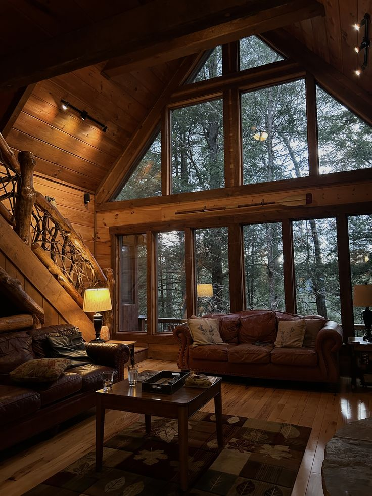
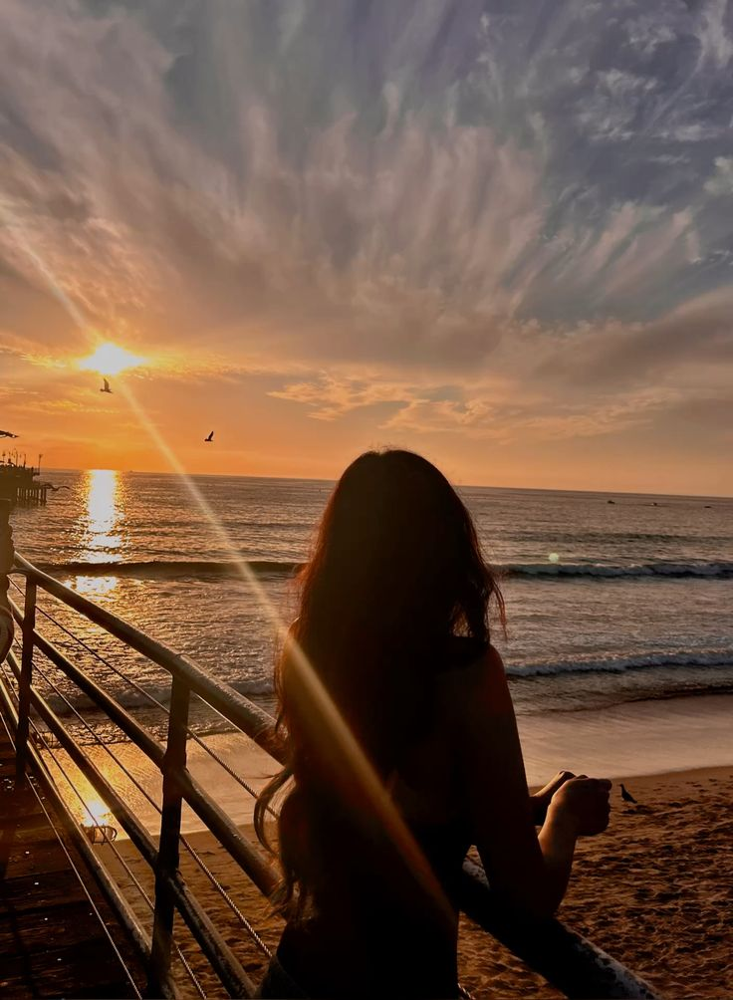

Día Cultural en una Biblioteca en París

En mis vacaciones ideales visitaría una hermosa biblioteca en París,
donde podría leer tranquila, escribir y disfrutar del arte y la literatura.
Puedes ver más sobre bibliotecas en París aquí:
Bibliotecas en París
Descanso en una Cabaña en la Montaña

También me encantaría quedarme en una cabaña acogedora,
rodeada de naturaleza, escribiendo, dibujando y descansando.
Día de Playa en Honduras

Finalmente, pasaría unos días en la playa, nadando,
caminando al atardecer y disfrutando mariscos deliciosos.
Puedes explorar playas en Honduras aquí:
Playas en Honduras